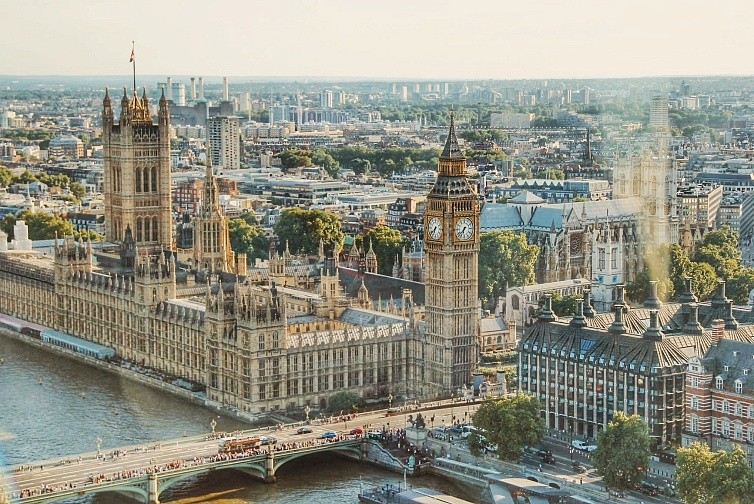

Добро пожаловать! Вы попали на сайт о Великобритании
Это главная страница, на которой будет рассказано о Великобритании.
Великобритания (официальное название — Соединенное Королевство Великобритании и Северной Ирландии) — островное государство в северо-западной Европе. Население составляет около 67 млн человек. Включает четыре исторические части: Англию (столица Лондон), Шотландию (Эдинбург), Уэльс (Кардифф) и Северную Ирландию (Белфаст). Форма правления: парламентская конституционная монархия. Действующим монархом является Король Карл III. Столица и крупнейший город: Лондон. Валюта: фунт стерлингов (GBP, £).
Экономика Великобритании — высокоразвитая постиндустриальная страна с одной из крупнейших экономик в мире. Основу экономики составляет сфера услуг: финансы, банковское дело, страхование и туризм (очень развиты в Лондоне). Высоко развиты промышленность (автомобилестроение, аэрокосмическая отрасль, машиностроение) и добыча нефти и газа на шельфе Северного моря. В сельском хозяйстве преобладает высокопродуктивное животноводство и растениеводство.
